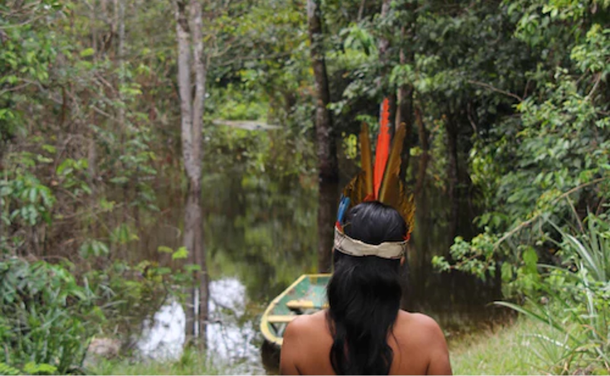

Climate control has been a very important topic around the world as we continue to find more evidence
about the effects caused by energy production and transportation. Many countries have made a shift to
creating sustainble infrastrucutre and invest in renewable energy sources in order to combat climate
change.
Although Brazil has been more accepting to renewable energy sources, there is still significant damage
done to the Amazon Rainforest which has been linked to issues with climate change. Along with poor sanitaion
and limited access to clean water, the country has many opportunities to address infrastructure
sustainability and climate control.
Continue reading more below to find out how the country is working towards addressing economic issues
pertaining to the U.N. goals for Clean Water & Sanitation, Infrastructure Sustainability, and Climate
Action.
Brazil faces significant challenges in providing access to clean water and sanitation to its
population. While the country has made progress in recent years, millions of people still lack
access to basic sanitation services, and water quality is often poor, particularly in rural
areas. One of the biggest issues in Brazil's access to clean water and sanitation is the unequal
distribution of resources, which is largely due to income disparities. Poorer communities are
more likely to lack access to these services, which can lead to serious health problems such as
the spread of waterborne diseases. Inadequate sanitation also contributes to environmental
pollution and poor living conditions.
During the 2016 Olympic Games in Rio de Janeiro, there were concerns about the city's water
quality, particularly in the Guanabara Bay area where sailing events were held. The bay had long
been polluted by sewage, and despite promises by the Brazilian government to clean it up before
the games, many athletes raised concerns about the water quality.
To address these challenges, Brazil has implemented a number of programs and initiatives aimed
at improving access to clean water and sanitation. The government has invested in
water treatment plants, expanded water supply networks, and implemented programs to promote
sustainable sanitation practices. However, more work is needed to ensure that all communities in
Brazil have access to these basic services.
Brazil faces various challenges related to infrastructure sustainability. The country is prone
to natural
disasters, such as floods and landslides, which can cause severe damage to infrastructure,
disrupt transportation networks, and harm the environment.
To address these challenges, Brazil has made investments into infrastructure that prioritize
sustainability and disaster risk reduction. The country has implemented programs to
improve water management, including the construction of water treatment plants and the
implementation of water conservation measures. Brazil has established policies to encourage
the use of renewable energy sources, such as wind and solar power, to reduce its reliance on
fossil fuels.
Additionally, Brazil has made significant efforts to improve its transportation infrastructure,
including expanding and upgrading its road and rail networks. The country has invested in
public transportation systems, such as buses and subways, to reduce traffic congestion and
promote sustainable transportation options. To further promote sustainable infrastructure,
Brazil has also established regulations and
standards for green building practices and sustainable construction materials. These efforts
have helped to reduce the environmental impact of infrastructure development and improve the
resilience of the country's built environment to natural disasters.

Brazil is home to a diverse range of natural environments, including the Amazon rainforest, the
largest rainforest in the world. However, Brazil has been facing a number of
environmental challenges, particularly related to deforestation, which can have serious
consequences for both the environment and people. One of the main drivers of deforestation in
Brazil is the expansion of agriculture and livestock
production, as well as mining. This has led to the destruction of large areas of the
Amazon rainforest, which is a vital carbon sink and home to countless plant and animal species.
Deforestation not only contributes to climate change by releasing large amounts of carbon into
the atmosphere, but it can also disrupt local weather patterns, leading to droughts and other
extreme weather events. Climate change is also having an impact on Brazil, with rising
temperatures and changing precipitation patterns leading to more frequent and severe droughts,
floods, and storms. These events can have devastating consequences for communities, particularly
those that rely on agriculture or fishing for their livelihoods.
Brazil is also home to a number of vulnerable populations, like indigenous communities, who
are particularly at risk from the impacts of deforestation and climate change. Indigenous
communities in Brazil have been facing numerous challenges for decades. The Brazilian
Constitution recognizes the rights of indigenous peoples and guarantees their protection, but
these protections are not always upheld in practice. Addressing these
issues will require a concerted effort from both the government and private sector, as well as
help from local communities. It will also require a
commitment to sustainable development and investing in renewable energy sources and
infrastructure that can help mitigate the impact of climate change and deforestation.